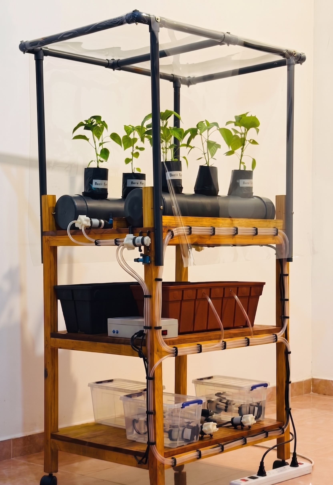

An intelligent IoT-powered dual NFT hydroponic platform combining automated Inorganic & organic nutrient management, predictive micro-climate control, and resilient off-grid communication for sustainable Capsicum Chili cultivation.
Hydroponic farming offers a sustainable solution to traditional agricultural challenges, but off-grid deployments and Inorganic / organic nutrient management present significant hurdles. This research proposes an intelligent, energy-efficient dual hydroponic system specifically optimized for Capsicum Chili farming. The project pioneers a hybrid approach by integrating both an Automated Organic Nutrient Film Technique (NFT) system featuring real-time compost classification using gas and color sensors and a Semi-Automated Inorganic NFT system. To ensure optimal plant health and resource efficiency, the system features an automated micro-climate zone that dynamically adapts to external weather conditions and predicts fungal risks using Vapor Pressure Deficit (VPD) and dew point analysis. Furthermore, the entire architecture is supported by a low-power, resilient communication failover system (Wi-Fi/GSM) designed specifically for off-grid agricultural environments. By utilizing edge computing on ESP32 microcontrollers and Logic control algorithms, this system eliminates manual dosing errors, reduces energy consumption, and provides farmers with a reliable, real-time cloud dashboard.
Our fully assembled energy-efficient NFT hydroponic platform featuring integrated climate control, automated nutrient dosing, and IoT-based monitoring.

A deep dive into the literature, identified gaps, and our proposed approach to solving off-grid hydroponic challenges.
Recent literature emphasizes the transition toward controlled environment agriculture (CEA) and the efficiency of the Nutrient Film Technique (NFT). While standard inorganic hydroponics are well-documented, organic hydroponics remains challenging due to unpredictable nutrient release from organic compost. Existing IoT systems provide basic monitoring but lack advanced integration. Studies show off-grid greenhouses suffer from unreliable internet and high energy consumption. Current research lacks a unified system combining resilient communication, precise fungal disease prediction, and simultaneous management of organic/inorganic nutrient loops.
There is a distinct lack of hybrid hydroponic systems managing organic and inorganic environments concurrently. Existing systems fail to provide localized, predictive fungal risk assessments and lack real-time compost readiness classification for organic dosing. Furthermore, most IoT architectures assume stable internet and grid power, leaving a gap for low-power, resilient communication frameworks for remote farming.
Maintaining the precise environmental and nutritional balance for Capsicum Chili is complex. In off-grid environments, farmers face three major problems:
Develop an Automated Organic NFT Hydroponic System featuring real-time compost classification (gas/color data).
Design a Semi-Automated Inorganic NFT Hydroponic System with closed-loop dosing algorithms.
Design a low-power, resilient communication system with dual-failover logic (Wi-Fi/GSM).
Develop an automated climate zone adapting to external weather and utilizing sensor data to predict/mitigate fungal risks.
The architecture divides into Organic and Inorganic NFT setups controlled by ESP32 microcontrollers. The Hardware Layer uses a multi-sensor array (DHT11, DS18B20, pH/EC, Gas/Color) and actuators (peristaltic pumps, fans, mists). The Control Layer uses edge-level Fuzzy Logic algorithms and VPD calculations. The Communication Layer uses an NTP-synchronized failover mechanism between Wi-Fi and GSM. The Cloud Layer uses Firebase Realtime Database and a web dashboard.
Key milestones and deliverables throughout our research journey.
Initial presentation defining problem, scope, architecture.
50% completion. Hardware assembly, sensor integration, Design Documents.
90% completion. Cloud integration, Fuzzy logic, communication failover, full automation testing.
Complete system deployment, research paper dossier, final performance validation.
Oral defense of individual components and final outcomes.
All project documentation and deliverables. Click any document to view.
Slide decks from all key project presentations.
The researchers and supervisors behind this project from SLIIT's Department of Computer Systems Engineering.
Low-Power, Resilient Communication System for Hydroponic Monitoring
Semi-Automated Inorganic NFT Hydroponic System
Automated Organic NFT Hydroponic System & Compost Classification
Automated climate zone that adapts to weather and predicts fungal risks
Supervisor
Co-Supervisor
Department of Computer Systems Engineering
Have questions about our research? Reach out to us.
SLIIT Malabe Campus, New Kandy Rd, Malabe, Sri Lanka
Sri Lanka Institute of Information Technology
Computer Systems Engineering
25-26J-035